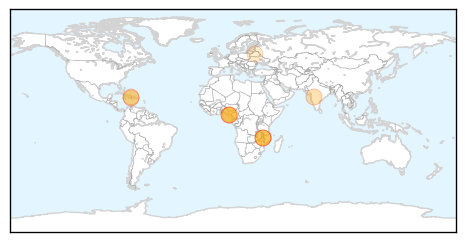

30 Day Trends
Web: 3 alerts, 0 warnings
Twitter: 0 alerts, 0 warnings
Top Articles:
- 0.996
- Haiti Cholera Response December 2014 - Haiti
- 0.990
- Cholera Kills 20 in Nigeria — Naharnet
- 0.990
- 20 Dies In Nigeria’s Cholera Outbreak
- 0.989
- Malawi floods raise fears of cholera outbreak, poor harvest
- 0.983
- Malawi floods raise fears of cholera outbreak, poor harvest
- 0.975
- Cholera kills 20 in Rivers
- 0.936
- Aurangabad plagued by water contamination
- 0.920
- Cholera outbreak kills 20 in Rivers
- 0.851
- 5 Years After Haiti's Earthquake, Where Did The $13.5 Billion Go?
- 0.771
- 20 Die in Cholera Outbreak in Rivers, Articles
- 0.664
- Malawi deploys military as floods leave 100,000 homeless
- 0.614
- Belarus restricts pork import from Kiev Oblast
Top Tweets:
-
No tweets found for Jan 15, 2015
Web/News Articles

Tweets

Article Locations
Article Confidences